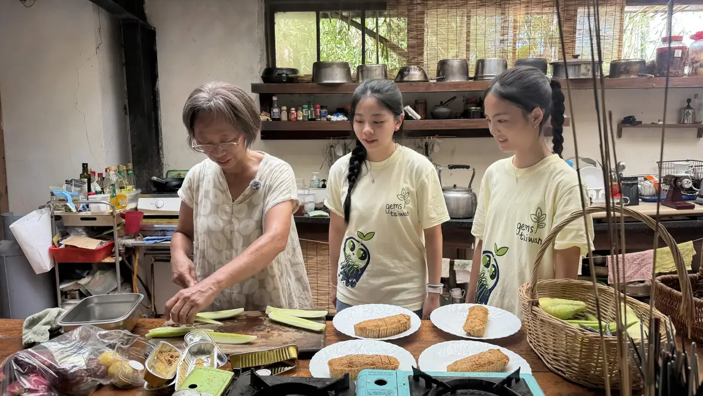

Timing constraints on delivery
ReLEAF's reactor makes a protectant (throughout this page the protectant is modelled from our wet lab data on one of the protectants we engineered and produced, ACC deaminase) only while its green lamp is on, so something has to decide when the lamp comes on, how bright, and for how long. For most of the year we treated that as a question about volume: how many litres does one hectare need. The answer kept moving, because it rests on a dose nobody has minimised and a canopy correction nobody has measured.
Time is the better question, because three independent intervals have to fit inside one window. A weather forecast sees about three days ahead. The reactor takes days to fill. The plant needs the protectant at one particular moment relative to the stress, and which moment is still contested at the bench.
They do not fit. One hectare's application takes 5.7 days on ten 20-litre units against a three-day forecast, so 2.7 days of production have to happen before any forecast exists to justify them. The reactor cannot chase the weather: it brews through the season and the forecast decides when to spend the stock, which makes storage stability a load-bearing number nobody has measured. Everything else on this page follows from that constraint.
Model inputs and their provenance
Twelve inputs carry this model and six of them are ours. The last column of each table says which is which, because the provenance of a number decides how hard a conclusion leaning on it can push. One input is neither measured nor cited: the canopy correction is a model, and the ledger in M4 shows exactly where it enters and what it contaminates. Money is given in US dollars at NT$32 = US$1.
Public record and literature
| Input | Source | What it sets | Provenance |
|---|---|---|---|
| County rice yields, every season since 2001 | Agriculture and Food Agency (農糧署) | Fits the stress index and scores it | public record |
| Daily weather, 2001 to 2025 | ERA5 reanalysis | The eighteen candidate stress terms | public record |
| Live forecast | Central Weather Administration (中央氣象署) | The three-day release decision | public record |
| Farm-gate paddy price, US$0.80/kg | Official 2026 price (NT$25.7/kg) | Turns an index level into money | public record |
| Unit cost, US$938 per 20-litre unit | Geospatial Analysis | Capital in the ledger | from GIS |
| CcaSR transfer function | Castillo-Hair et al. (2019) | Demand to lamp intensity | literature |
| ACC deaminase kinetics | Glick (2014); Todorovic & Glick (2008) | Activity to protein mass | literature |
From our own bench
| Input | Source | What it sets | Provenance |
|---|---|---|---|
| Secreted activity, 7.25 mU mL⁻¹ | DNPH assay, 7 October 2026, n = 1 | Protectant per litre of culture | ours, below quantitation |
| Light response of two LPA wells | Light plate, DNPH read at 28 h, n = 1 each | Checks the lamp curve; sets nothing on its own | ours |
| Applied volume, 1.67 mL per three sprays | Experiment #9, phase 3 protocol | The dose, with the plate area | ours |
| Plate area, 78.5 cm² | 10 cm round plate, from the protocol | The dose, with the volume | ours |
| Timing arms, before / with / after | Three plant runs, two of them disagreeing | When the protectant must arrive | ours, contested |
| Reactor throughput, 34,807 mU L⁻¹ d⁻¹ | Titre over the batch cycle | Vessel litres per hectare | ours, derived |
| Rice canopy correction, ×2.44 | Leaf area index 4.5 against 0.115 on a plate | Plate rate to field rate | modelled, not measured |
Results
The stress index, and the blind test it is in
Most crop stress indices weight temperature, water and light by expert judgement. We let Taiwan's harvests choose instead. Taiwan grows two rice crops a year in the same field: the first (一期) is transplanted around February and harvested in June, the second (二期) transplanted in July and harvested in November. They meet different weather, so they are fitted separately and an index value is never quoted without its crop.
A season whose yield fell below its county trend was a stressed season. For each crop we fitted all 215 − 1 = 32,767 combinations of fifteen candidate stresses and scored every one on years it had not seen. The second crop pays for wind, light and badly timed water; heat earns nothing once those are in, which is worth saying plainly because the wet lab has a heat programme this index does not support.


Against the no-weather trend the model carries 32% less county error in the second crop. The first crop is the weaker of the two fits and it is the one now being tested blind: the 2026 first-crop forecast was frozen on 26 September, before any county published, and four of sixteen counties are in at 7.9% county error against the trend's 8.8%. Four is too few to call. Hualien and Pingtung beat their index badly, Taitung undershot it, and only Taichung landed where history said. The second crop is not harvested until November, so the fit we trust most is the one no blind test has reached.

The lamp curve, checked on our own hardware
The reactor holds Bacillus subtilis WB800 carrying the cyanobacterial CcaSR system. Green light at 535 nm activates CcaS, CcaR~P drives PcpcG2, and the protectant gene behind a secretion signal puts active enzyme in the supernatant. Castillo-Hair et al. (2019) fitted the steady-state response in B. subtilis to a Hill function; inverting it turns a demand into a lamp intensity, and the equations are set out in Key mathematical infrastructure.


Two wells were induced at different green intensities and assayed by DNPH. Per hour of induction the dimmer well gave 0.128 of the bright one; the published curve, with nothing fitted by us, predicts 0.144 if that well sat at 220 lux. That is the only place in this model where a prediction taken from a paper meets a measurement on our own build, and the two agree to within 11%. It is two wells read once, and they differed in duration as well as intensity, so it is a check and not a calibration. It also depends on the setting: at 510 lux the curve predicts 0.454 and we measured a third of that, which would say CcaSR is less sensitive in our hands than in the paper's.
The same two numbers cannot size the reactor. That assay ran its reaction for 28 hours, and averaged over it the bright well is 0.33 mU mL⁻¹, 22 times below the 7.25 mU mL⁻¹ an earlier supernatant assay reported over 30 minutes. Substrate is not the explanation, since only 1.3% of the 43 mM substrate was consumed. Either this culture carries far less enzyme, or the enzyme stopped early and 28 hours is the flat end of a curve that finished in the first hour or two. A single decay with a one-hour time constant passes through both points and would put the initial rate at 9.2 mU mL⁻¹, the same order as the earlier assay, so the two may not disagree at all. The triplicate run on 18 October settles it by reading the same plate at 0.5, 1, 2, 4 and 28 hours instead of only at the end, and returns the decay at bench temperature as well, which is the storage number Section 1 needs.
When the protectant has to arrive
Since July the plant team has run the same design: the protectant goes on one day before the salt, with it, or one day after. That design exists because the dry lab asked whether a farm needs a prediction at all. If pre-treatment wins, ReLEAF needs a forecast; if co-treatment wins, it needs a full tank and a fast response, which is a different machine. Three runs have reported and they disagree.


On agar at 75 mM, scored as fresh weight, pre-treatment wins. In soil at 300 mM, scored as chlorophyll per gram, co-treatment wins and pre-treatment does nothing; a commercial peptide at 100 mM also put co-treatment first. The soil run cannot settle it. Its five tubes held 22 to 199 mg of tissue, each weighed once, and chlorophyll per gram tracks that weight at r = −0.85; the group that looks rescued is the smallest of the five, and read as total chlorophyll the same tubes put co-treatment last.
Earlier drafts of this page multiplied every economic figure by an efficacy of 0.58, carried from Arabidopsis fresh weight on agar to rice grain yield. That coefficient is withdrawn. The agar run reaches the ceiling of the calculation it came from and the soil run cannot be read, so neither bounds it, and the payback below is drawn against efficacy on an axis rather than at a value we cannot defend.
From one plate to one hectare, and on to capital
Everything above arrives here as one chain. A recorded volume over a known plate area is a rate, and a rate scales to a hectare with no modelling in between; earlier drafts used 100 cm² because the plate size had never been written down, and the protocol gives 10 cm round plates, so the rate is 27% higher than we were carrying. From there the titre turns litres into protectant, the weather record turns one application into a season, and the reactor's own throughput turns a season into vessels and money.
Two rows deserve their caveat in the same breath as the number. The canopy correction is modelled from a leaf area index of 4.5 against 0.115 on a seedling plate and spans 1.68 to 3.52 on its own, so the 5,188 L is a working scenario and not a validated rice dose. And the experiment that produced 1.67 mL changed salt level and timing, never the amount, so 2,126 L/ha is a dose that worked rather than the smallest that works; one plate with neat, 1:3, 1:10 and 1:30 arms would find the minimum, and every row below it would move.
What efficacy the payback requires, and why the fleet is idle
With efficacy unbounded the useful question is not what the payback is but what efficacy the payback requires. On ordinary 雲林 paddy the weather-attributable loss this protectant could address is US$138 per hectare per crop, and the first crop never crosses the release threshold in 25 years, so one crop a year qualifies. Against ten units at US$938 the ordinary-paddy curve never reaches five years anywhere on the axis; it would need an efficacy of 12.8, which is not a hard target but an impossible one. Salt-affected coastal land is a hundredfold larger problem per hectare and needs 0.13, low enough that we would expect to clear it but cannot yet show that we do.
The other half of the problem is that the machine is idle. Two crops a year and only the second ever fires; within it, 17 of 25 seasons never cross the threshold. A firing season needs 9 passes at 5.4 days each, which is 49 reactor-days inside a crop of about 120 days, so a ten-unit fleet tops out at 2.5 hectares and spends 96% of the calendar doing nothing. The 64.7 years is as much a statement about an asset that sits still as about the protectant: sharing one fleet across the hectares it can actually serve brings ordinary paddy to 26 years, still not a business, and the coast to 0.96, where the binding constraint stops being money and becomes throughput.
From the bench to Geospatial Analysis and the business plan
Every number in the ledger that is not arithmetic came off a bench in this team. The plate area and the applied volume are the plant team's protocol, the titre and the light-plate wells are the measurement team's assays, and the throughput is the reactor team's batch cycle. The model's job is to carry them out of the laboratory in a form two other pages can use.


The business team asked for three numbers in a row: how much protectant a hectare of ordinary rice farmland needs, how far that is from what the current reactor can make, and what closing the gap costs. The ledger was built to end on exactly those, and all three carry the canopy correction, so they are scenario figures rather than quotes.
| The question | The answer this model gives | Where in the model |
|---|---|---|
| How much protectant does one hectare need? | 37.6 kU per application and 339 kU in a season that fires, which at our secreted protein concentration is about 10 g and 92 g of enzyme | M4, ledger rows 7 and 10 |
| How far is that from what we can make now? | One hectare needs 81 L of vessel running all season. The current spec is 10 × 20 L = 200 L, which covers 2.5 ha — about one Taiwanese farm. A 100-hectare association needs 8,106 L, a 41× scale-up | M4, ledger row 12, and M5 |
| What does that cost? | US$3,800 of capital per hectare at US$938 per 20-litre unit, before any refill, service or labour. For 100 hectares, US$379,992 | M4, ledger footer |
Geospatial Analysis answers a question that looks the same and is not. It derives units per hectare from soil, because how far and how long the protectant stays where it is put depends on soil class; this page derives units per hectare from reactor throughput, because a fleet that cannot brew fast enough is short whatever the soil does. A deployment has to satisfy both and the binding one will differ by township, so the two densities need reconciling before either is quoted as the number of machines a field needs.
Where the two pages already agree is ownership, and they reached it from opposite directions. Geospatial Analysis puts capital per hectare at or above a full year of gross paddy revenue in every soil class and notes that 99% of Taiwanese farmers work under two hectares, so individual ownership is arithmetically out of reach. This page gets there from the duty cycle: a ten-unit fleet brews on 4.3% of the calendar and covers 2.5 hectares, so a machine bought by one farm is idle almost all of its life. A shared asset held by a farmers' association is not a preference in either account; it is the only structure the arithmetic allows. The two costs this page does not carry are the ones a farmer actually pays — refill cartridge cost and hardware service life — and the straw-return mechanism in the business plan is the lever on the first of them.
Conclusion
The model set out to size a dose and ended up sizing a machine. Taiwan's own harvests supply a stress index that beats the no-weather trend by 32% in the second crop and is now carrying a frozen 2026 forecast into the open. Our light plate reproduces the published CcaSR curve to within 11%, which is the one place a borrowed parameter meets our own hardware and survives. From there the chain is arithmetic: 37.6 kU of protectant on a hectare, 81 litres of vessel to make it in a season, US$3,800 of capital to buy them.
Three of those four results point the same way. The reactor needs 5.7 days to serve one hectare against a three-day forecast; it covers 2.5 hectares and sits idle 96% of the calendar; and the capital it implies is out of reach for a farm of the size 99% of Taiwanese farmers work. None of that is an argument against the protectant. It is an argument about who owns the reactor and where it stands, and it agrees with the conclusion Geospatial Analysis reached from soil and revenue instead of throughput.
What the model cannot do is say how much of a loss the protectant takes back. Our own plant runs disagree about when it should arrive and none of them bounds its efficacy, so every figure in dollars here is drawn against an open axis. On salt-affected coastal land the axis only has to reach 0.13 for the capital to return inside five years; on ordinary paddy no value on it is enough. That is the single most useful thing this model produced, and it is a negative result.
Key mathematical infrastructure
Six relations carry the whole page. Two are the optogenetic transfer function and its inversion, two turn an assay reading into enzyme, and two turn enzyme into hardware and money. Each is cited where it is not ours.
Steady-state output of PcpcG2 under CcaSR as a fraction of saturation, against green photon flux I. For B. subtilis, K1/2 = 4.66 ± 0.63 µmol m⁻² s⁻¹ and n = 1.88 ± 0.16 (Castillo-Hair et al., 2019). The E. coli values differ and are not used here.
Equation 1 inverted: the lamp setpoint that delivers a demand f from M1. Useful control runs from f = 0.015 to 0.94, between the lamp's floor and its 20 µmol m⁻² s⁻¹ ceiling.
Michaelis–Menten, used to correct the DNPH reading to Vmax. At 43.0 mM substrate against Km = 3.4 mM the assay runs at 93% of Vmax (Hontzeas et al., 2004).
Active-site concentration from corrected activity, with kcat = 146 min⁻¹ for Pseudomonas putida UW4 (Hontzeas et al., 2004). At our titre this is 54 nM of sites, or 1.96 mg L⁻¹ of protein.
Litres of culture per hectare, from the volume applied over a known plate area scaled to 10⁸ cm², times the canopy correction C = 2.44. C is the only modelled term in the ledger and spans 1.68 to 3.52.
Vessel litres a hectare needs, from the dose, the passes a firing season takes, the reactor's output R in culture-litres per vessel-litre per day and the length of the crop; and the payback that capital K reaches at efficacy ε against an addressable loss L. Both are ours.
Current limits
Six things this model cannot yet do. Efficacy is unbounded: no plant run of ours constrains how much of a salinity loss the protectant takes back, so every figure in dollars is drawn against efficacy rather than at a value. The dose is one that worked, not the smallest that works, and no dilution series has been run. The canopy correction is modelled and spans 1.68 to 3.52, and every row of the ledger below it inherits that. The titre rests on one well below the assay's quantitation limit, and the 28-hour endpoint that would check it cannot be told from a stalled reaction. Storage stability is unmeasured, which matters because the fleet has to bank stock to be useful at all. The release rule is counted from waterlogging while the payback is priced on salinity; making them agree means rebuilding the rule around salt-sensitive growth stages, which would need roughly fifteen applications in a 30-day window instead of nine, or 81 reactor-days inside 30, which the current fleet could not serve for even one hectare without banking well in advance.
References
Measurements made by this team are documented on Measurement, Plants and Notebook, and are cited in the tables above rather than listed here. Published sources follow APA 7.
- Agriculture and Food Agency, Ministry of Agriculture. (2026). Rice production statistics by county and crop season, 2001–2026 [Data set]. Republic of China (Taiwan).
- Arnon, D. I. (1949). Copper enzymes in isolated chloroplasts. Polyphenoloxidase in Beta vulgaris. Plant Physiology, 24(1), 1–15. https://doi.org/10.1104/pp.24.1.1
- Castillo-Hair, S. M., Baerman, E. A., Fujita, M., Igoshin, O. A., & Tabor, J. J. (2019). Optogenetic control of Bacillus subtilis gene expression. Nature Communications, 10, 3099. https://doi.org/10.1038/s41467-019-10906-6
- Central Weather Administration. (2026). Station observations and short-range forecasts [Data set]. Republic of China (Taiwan).
- Glick, B. R. (2014). Bacteria with ACC deaminase can promote plant growth and help to feed the world. Microbiological Research, 169(1), 30–39. https://doi.org/10.1016/j.micres.2013.09.009
- Hersbach, H., Bell, B., Berrisford, P., Hirahara, S., Horányi, A., Muñoz-Sabater, J., Nicolas, J., Peubey, C., Radu, R., Schepers, D., Simmons, A., Soci, C., Abdalla, S., Abellan, X., Balsamo, G., Bechtold, P., Biavati, G., Bidlot, J., Bonavita, M., … Thépaut, J.-N. (2020). The ERA5 global reanalysis. Quarterly Journal of the Royal Meteorological Society, 146(730), 1999–2049. https://doi.org/10.1002/qj.3803
- Hontzeas, N., Zoidakis, J., Glick, B. R., & Abu-Omar, M. M. (2004). Expression and characterization of 1-aminocyclopropane-1-carboxylate deaminase from the rhizobacterium Pseudomonas putida UW4: A key enzyme in bacterial plant growth promotion. Biochimica et Biophysica Acta (BBA) — Proteins and Proteomics, 1703(1), 11–19. https://doi.org/10.1016/j.bbapap.2004.09.015